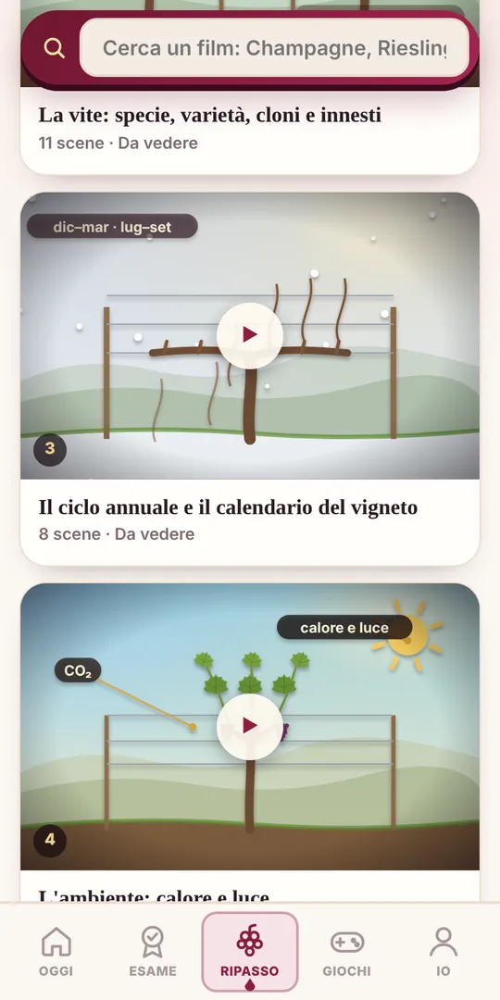
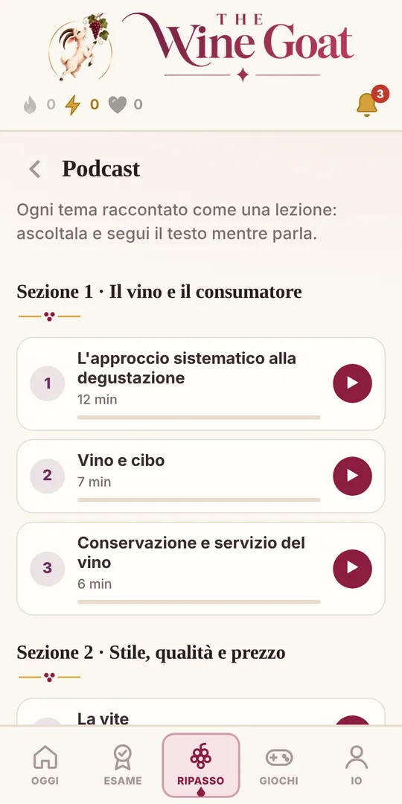
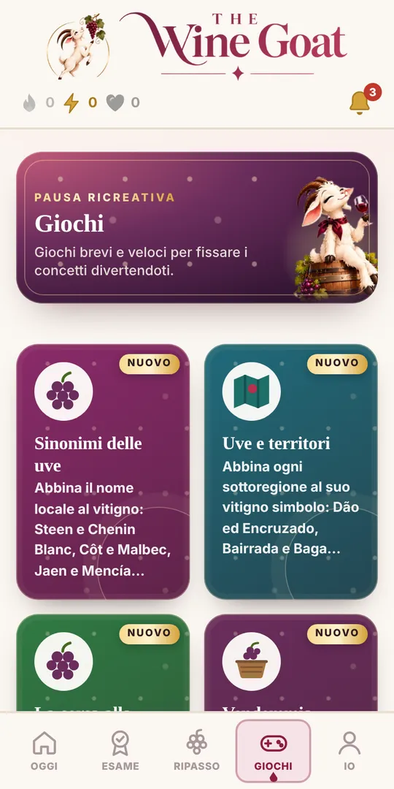
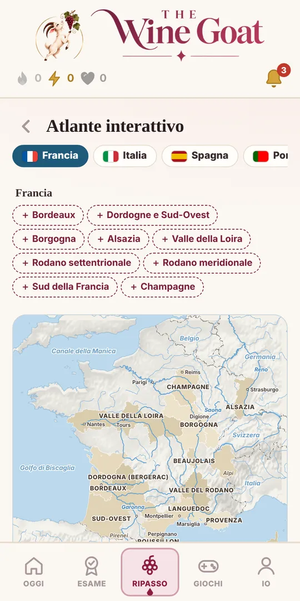
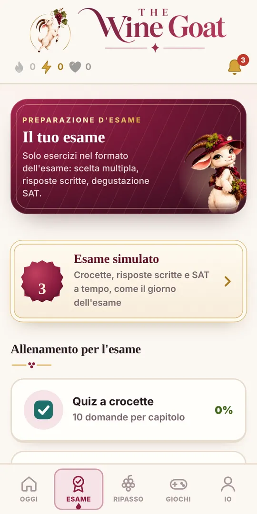
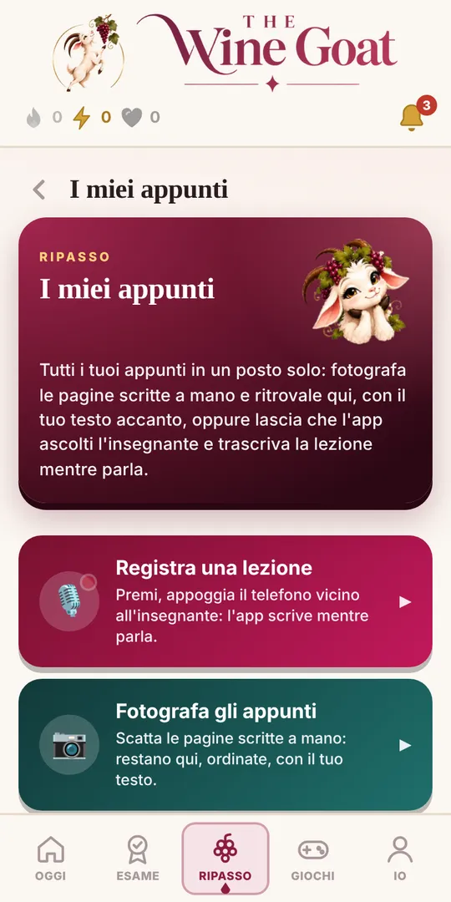

Bordeaux
Il modulo di prova: completo e gratuito.
Gratis
Apri gratisPreparazione esame WSET® Livello 3 · Award in Wines
Quiz WSET 3, domande a risposta breve con correzione immediata, degustazione con il metodo SAT, simulazioni d'esame e tutti i trabocchetti da evitare. In italiano, ovunque tu sia. Un'app personalizzata: ti crea il piano di studio fino all'esame, ti consiglia cosa fare ogni giorno e ti aiuta a colmare le lacune.

Domanda lampo · Bordeaux
Altre domande gratis ↓Non solo quiz: esercizi di ogni tipo, giochi, film animati, podcast, mappe e strumenti per i tuoi appunti. Tocca un riquadro per provarlo.

Quiz, domande aperte con correzione, mappe e giochi su Bordeaux: l'intero modulo è aperto, senza carta di credito. Prova il metodo su una delle regioni più importanti dell'esame.
Sei esercizi veri, direttamente in questa pagina. Scegline uno e gioca: nell'app ne trovi migliaia.
Nell'app il modulo Bordeaux è gratis per intero: quiz, domande aperte con correzione e ripasso dei tuoi errori.
Salva i risultati e crea il tuo pianoTocca un nome locale, poi l'uva corrispondente.
Affermazioni che ingannano molti candidati.
Tocca la carta per girarla.

All'esame WSET 3 le domande aperte valgono metà della teoria. Prova a rispondere mentalmente, poi guarda gli elementi che portano punti.
Il vino B è chiuso con un tappo di sughero naturale. Quali condizioni di conservazione consiglieresti per conservarlo a lungo termine? (5 punti)
Ogni argomento diventa un breve film animato con voce: la potatura, la vinificazione, le regioni con le mappe. Alla fine: le parole chiave e un test.
▶ Guarda i film nell'app
Ascolta un episodio vero. Nell'app trovi tutti i 45 capitoli, con il testo che scorre mentre ascolti.

Due strumenti che nessun libro ti dà.
Fotografa le pagine scritte a mano: restano nell'app, sul tuo dispositivo, accanto al tuo testo.
L'app ascolta l'insegnante e trascrive mentre parla.
Schermate vere, come le vedrai sul telefono.





Le altre risorse per preparare il WSET 3 coprono un solo pezzo. Qui trovi tutto, nella tua lingua.
| The Wine Goat | App di quiz | Esami di prova in PDF | Libro e appunti | |
|---|---|---|---|---|
| Quiz a scelta multipla | ✓ oltre 2.000 | ✓ | ✓ | — |
| Correzione delle risposte scritte | ✓ immediata | — | da soli | — |
| Film animati e podcast | ✓ 68 film · 45 podcast | — | — | — |
| Giochi per memorizzare | ✓ 11 giochi | a volte | — | — |
| Mappe interattive | ✓ 42 mappe | — | — | su carta |
| Appunti a lezione e foto | ✓ | — | — | a mano |
| Lingue | IT · FR · EN | di solito solo inglese | inglese | — |
| Per iniziare | Bordeaux gratis | a pagamento | a pagamento | — |
Niente abbonamenti: sblocchi un modulo con un pagamento unico e resta tuo per 12 mesi. Bordeaux è gratis per tutti.
Il modulo di prova: completo e gratuito.
Gratis
Apri gratisMetodo SAT, abbinamenti, conservazione e servizio.
9 € pagamento unico
SbloccaClima, ambiente, gestione del vigneto e potatura.
9 € pagamento unico
SbloccaVinificazione di bianchi, rossi e rosati, affinamento, prezzo.
9 € pagamento unico
SbloccaBorgogna, Beaujolais, Alsazia, Loira, Rodano, Sud.
9 € pagamento unico
SbloccaItalia, Spagna, Portogallo, Germania, Austria, Ungheria, Grecia.
12 € pagamento unico
SbloccaUSA, Canada, Cile, Argentina, Sudafrica, Australia, Nuova Zelanda.
9 € pagamento unico
SbloccaChampagne, Prosecco, Cava, Sherry, Porto e vini dolci.
9 € pagamento unico
SbloccaSimulazioni d'esame complete, logica d'esame e trabocchetti.
12 € pagamento unico
SbloccaTutto il Livello 3, tutti gli strumenti, 12 mesi.
78 € 59 € Risparmi 19 €
Prezzi IVA inclusa. Hai già qualche modulo? Passando a «Tutti i moduli» paghi solo la differenza.
Ogni modulo comprende tutti gli strumenti dell'app per quella parte del programma.
L'app ti crea un planning giorno per giorno fino all'esame, in base al tuo obiettivo (Pass, Merit o Distinction), alla data dell'esame, ai giorni di corso e al tempo che hai. Ti dà consigli, individua i tuoi punti deboli e ti fa ripassare proprio quelli.
Domande a scelta multipla su viticoltura, vinificazione, regioni, spumanti e fortificati, con la spiegazione di ogni risposta.
Scrivi la tua risposta e ricevi subito la correzione punto per punto, in base ai punti chiave del libro: cosa hai centrato, cosa manca, quanti punti avresti preso.
Fotografa le pagine dei tuoi appunti e ritrovale nell'app accanto al tuo testo, oppure trascrivi la lezione mentre l'insegnante parla.
Per ogni domanda aperta vedi la risposta modello che prende il punteggio pieno, così impari cosa vuole l'esaminatore.
Aspetto, naso, palato e conclusioni: allenati a descrivere il vino con il lessico giusto e a motivare qualità e potenziale.
La catena clima → uva → vino, le parole che fanno perdere punti, le domande trappola che tornano ogni anno.
Ogni risposta sbagliata torna finché non la sai: il contatore degli errori scende man mano che li correggi.
Abbinamenti, nomi locali delle uve, mappe delle regioni e podcast per ripassare anche in metro.
Sapere come si viene valutati è metà della preparazione. L'esame WSET Level 3 Award in Wines ha due parti, e bisogna superarle entrambe.
Coprono tutto il programma, dalle condizioni del vigneto alle regioni del mondo. Servono rapidità e precisione.
Domande scritte divise in sotto-domande: qui conta collegare causa ed effetto, non elencare parole chiave.
Una nota di degustazione completa con l'approccio sistematico (SAT): descrizione precisa e conclusioni motivate.
Il 55% va raggiunto nella degustazione e in entrambe le sezioni della teoria. I risultati possibili sono Pass, Merit e Distinction.
Consiglio The Wine Goat: le domande a risposta breve sono la parte in cui si perdono più punti. Allenale per iscritto fin dalla prima settimana.
La guida per superare il WSET Level 3 Award in Wines al primo tentativo: cosa studiare, come allenarsi e quali errori evitare.
La prima sezione della teoria comprende 50 domande a scelta multipla. Il modo più efficace per prepararle è rispondere a tante domande in stile esame e capire ogni errore: per questo The Wine Goat raccoglie oltre 2.000 quiz WSET 3 con spiegazione, organizzati per argomento e per regione, dal vigneto alla cantina, da Bordeaux alla Nuova Zelanda.
Le 4 domande a risposta breve valgono metà della teoria e sono la parte in cui si perdono più punti. Non basta conoscere i fatti: bisogna spiegare il perché, collegando causa ed effetto (clima → maturazione → stile del vino). Con The Wine Goat scrivi la tua risposta, ricevi la correzione punto per punto in base ai punti chiave del libro e vedi la risposta modello.
Fare almeno qualche simulazione completa a tempo è il modo migliore per arrivare sereni: abitua al ritmo dell'esame e mostra quali capitoli ripassare. Il modulo «Esame e strategia» comprende simulazioni d'esame WSET 3, la logica d'esame e i trabocchetti più frequenti.
La prova di degustazione alla cieca di due vini si prepara con l'approccio sistematico (SAT): aspetto, naso, palato e conclusioni su qualità e potenziale d'invecchiamento. Nell'app trovi il lessico di ogni voce e le domande per allenare le conclusioni; il bicchiere resta il miglior allenamento.
Molti materiali di ripasso esistono solo in inglese. The Wine Goat è in italiano, francese e inglese: puoi studiare nella tua lingua e passare all'inglese con un tocco se sosterrai l'esame in inglese.
Dieci minuti di quiz al giorno, una domanda aperta scritta a settimana, il ripasso degli errori e una simulazione nelle ultime settimane: è il ritmo che proponiamo. Con i moduli scegli da quale parte del programma WSET 3 partire, e Bordeaux è gratis per provare.
Quiz e domande aperte seguono il programma dell'esame WSET Livello 3, tema per tema e regione per regione.
Dieci minuti di quiz al giorno battono una maratona prima dell'esame. Riprendi sempre da dove avevi lasciato.
Le domande a risposta breve si imparano scrivendo. Ricevi la correzione e confrontala con la risposta perfetta.
Le domande sbagliate tornano finché non le sai. Il contatore ti mostra quanto ti manca.
Prove complete a tempo, nelle stesse condizioni del giorno dell'esame, per arrivare senza sorprese.
Un'unica piattaforma per tutto il percorso WSET Wines: inizi dal livello che ti serve e prosegui con lo stesso metodo.
Il livello avanzato: teoria completa, domande a risposta breve, degustazione alla cieca con il SAT e simulazioni d'esame.
Inizia il Livello 3Le principali uve e regioni del mondo, etichette e abbinamenti: quiz e ripasso per l'esame a scelta multipla.
AvvisamiLe basi del vino: stili, servizio e abbinamento cibo-vino, con quiz brevi per arrivare sicuri all'esame.
AvvisamiNo. The Wine Goat è una piattaforma indipendente di preparazione all'esame. Non è affiliata né approvata dal Wine & Spirit Education Trust: per iscriverti all'esame devi passare da una scuola autorizzata (Approved Programme Provider).
Ogni modulo copre una parte del programma (per esempio «Europa» o «La cantina») con quiz, domande aperte corrette, giochi e materiale di ripasso. Lo sblocchi con un pagamento unico e resta tuo per 12 mesi, senza rinnovi automatici.
Tutto il modulo Bordeaux, per intero, più qualche esercizio di prova degli altri moduli. Non serve la carta di credito.
No, è un complemento. Il corso e il materiale ufficiale ti danno le basi; The Wine Goat ti allena a ricordarle e a scriverle bene il giorno dell'esame.
Sì. Tutta la piattaforma è in italiano, francese e inglese, e puoi cambiare lingua in qualsiasi momento: utile se sosterrai l'esame in inglese.
Scrivi la tua risposta: l'app la confronta con i punti chiave del libro, segnala gli elementi centrati e quelli mancanti, stima il punteggio e ti mostra la risposta modello. Tutto avviene sul tuo dispositivo, senza servizi esterni.
Dipende dal tuo punto di partenza, ma in genere servono alcuni mesi di studio regolare oltre alle ore di corso. I moduli restano tuoi per 12 mesi, così hai tempo anche per un'eventuale seconda sessione.
La teoria comprende 50 domande a scelta multipla e 4 domande a risposta breve; poi c'è la degustazione alla cieca di due vini.
Il 55% nella degustazione e in ciascuna delle due sezioni della teoria. I risultati sono Pass, Merit o Distinction.
Sì: trovi la guida al metodo SAT, il lessico per ogni voce e domande su qualità e potenziale d'invecchiamento. Il vino nel bicchiere però resta insostituibile.
Sì, The Wine Goat funziona nel browser di telefono, tablet e computer. I progressi restano salvati sul dispositivo che usi.
Sì, il Livello 2 e il Livello 1 sono in arrivo con lo stesso metodo e la stessa formula a moduli.

Sei domande gratuite, nessuna carta di credito: scopri subito a che punto sei.
Prova gratis